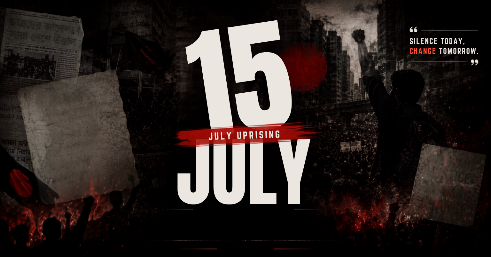

ISTIACK'S JULY CORNER
বাংলায় পড়ুন

Share
Print
Print Options
Select content to print:
English Only
Bangla Only
Both Languages
Cancel
Link copied!
 ISTIACK'S JULY CORNER
ISTIACK'S JULY CORNER
ISTIACK'S JULY CORNER
ISTIACK'S JULY CORNER